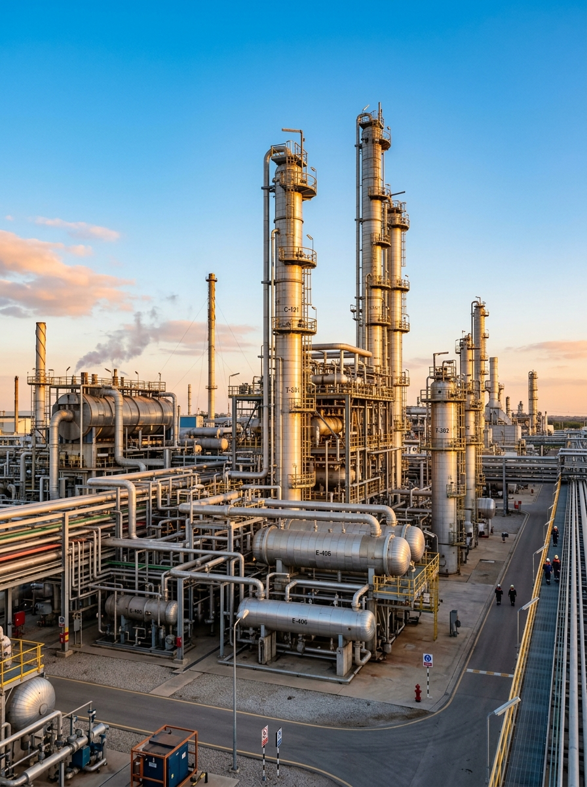
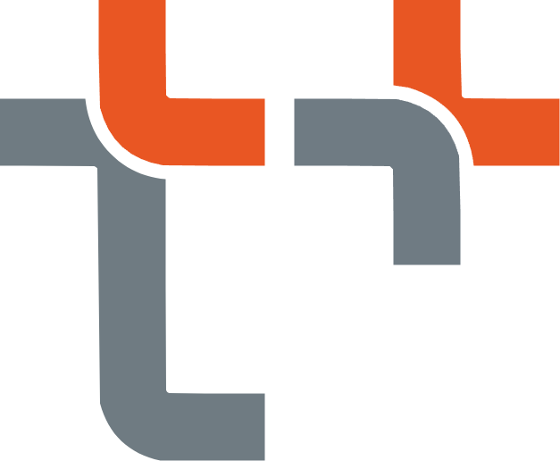
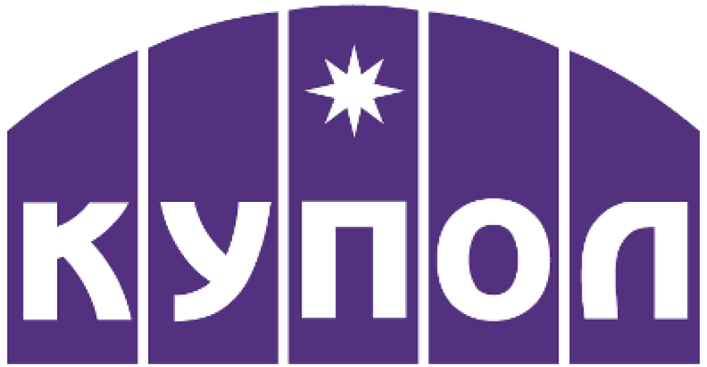
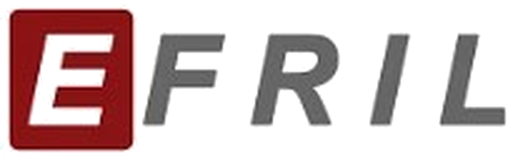
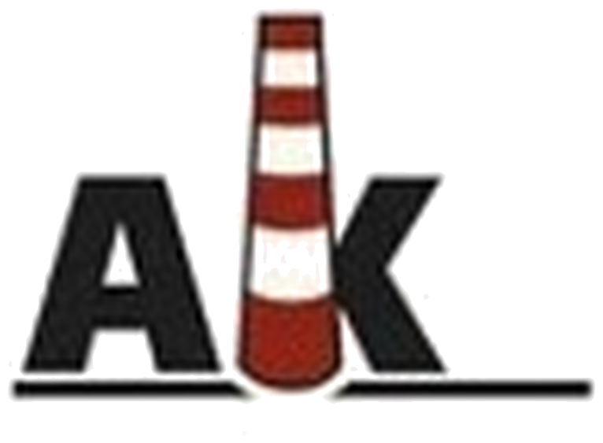
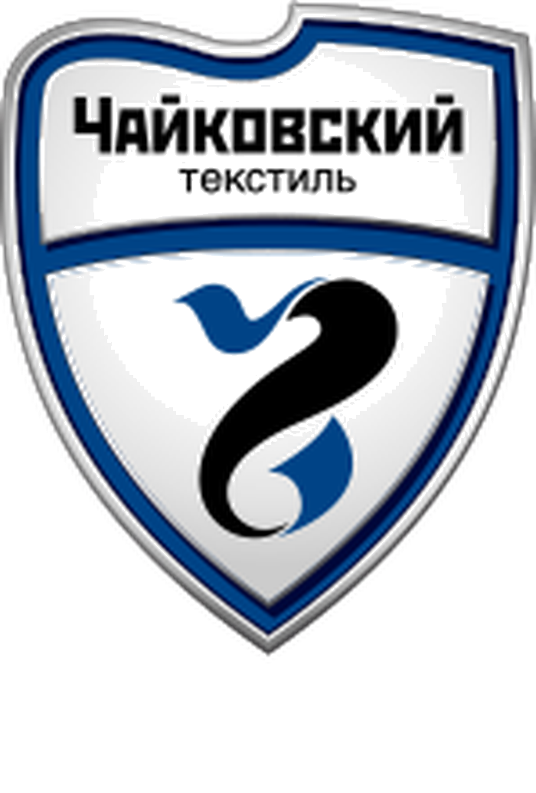
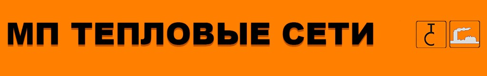
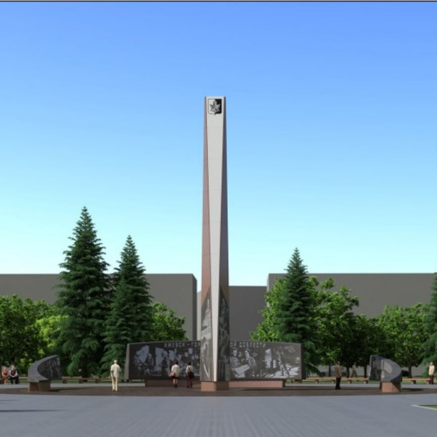

Заявка
Присылайте заявку на электронный адрес. При затруднениях звоните или задавайте технический вопрос на сайте или в мессенджере Макс.
Ижевск · вся Россия
ООО «Маяк» проводит лабораторные исследования, испытания, неразрушающий и разрушающий контроль, техническое обследование и диагностирование, экспертизу промышленной безопасности.

Направления
Как мы работаем
Присылайте заявку на электронный адрес. При затруднениях звоните или задавайте технический вопрос на сайте или в мессенджере Макс.
Анализ заявки техническим специалистом, подготовка коммерческого предложения. При согласовании стоимости подготовка проекта договора.
Согласование с Заказчиком даты выезда на объект. Проведение натурных и камеральных работ.
Согласование с Заказчиком и выдача итоговой документации. Сопровождение при необходимости внесения заключений в Реестр РТН.
Отрасли
Заказчики






Отзывы
Компания
ООО «Маяк» — экспертная организация из промышленного города трудовой доблести Ижевск. В нашей команде работают специалисты с многолетним опытом работы не только в качестве специалиста экспертной организации, но и имеющие за плечами опыт работы в эксплуатации, проектировании и техническом надзоре. В рамках экспертной деятельности имеем все необходимые полномочия, включая лицензию Ростехнадзора по проведению экспертизы промышленной безопасности. Обладаем собственной аттестованной лабораторией неразрушающего контроля и широким спектром применяемого оборудования.
Генеральный директор — Федорова Светлана Владимировна.
Подробнее о компании
Техническому специалисту
Можно задать любой вопрос о необходимости проведения работ и их объемах, о подготовке объекта или о составе требуемой технической документации. Мы постараемся оперативно неравнодушно ответить на все ваши вопросы.